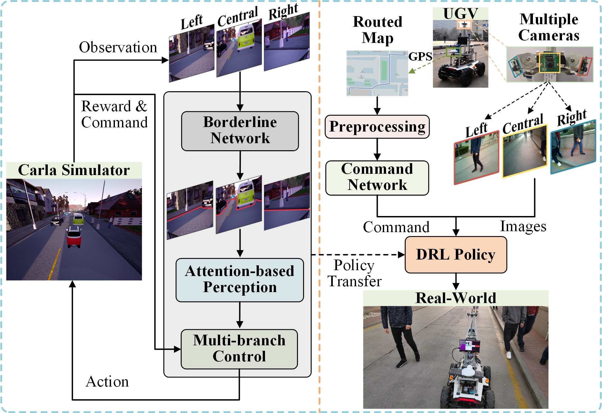

Autonomous Multi-View Navigation via Deep Reinforcement Learning
Xueqin Huang, Wei Chen, Wei Zhang, Ran Song, Jiyu Cheng, and Yibin Li
School of Control Science and Engineering, Shandong University
Abstract
In this paper, we propose a novel deep reinforcement learning (DRL) system for the autonomous navigation of mobile robot that consists of three modules: map navigation, multi-view perception and multi-branch control. Our DRL system takes as the input a routed map provided by a global planner and three RGB images captured by a multi-camera setup to gather global and local information, respectively. In particular, we present a multi-view perception module based on an attention mechanism to filter out redundant information caused by the multi-camera sensing. We also replace raw RGB images with low-dimensional representations via a specifically designed network, which benefits a more robust sim2real transfer learning. Extensive experiments in both simulated and real-world scenarios demonstrate that our system outperforms the state-of-the-art approaches.

Overview of the proposed multi-view navigation system via DRL.